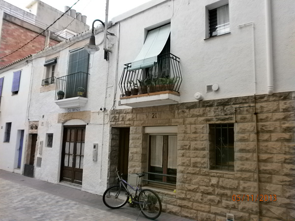
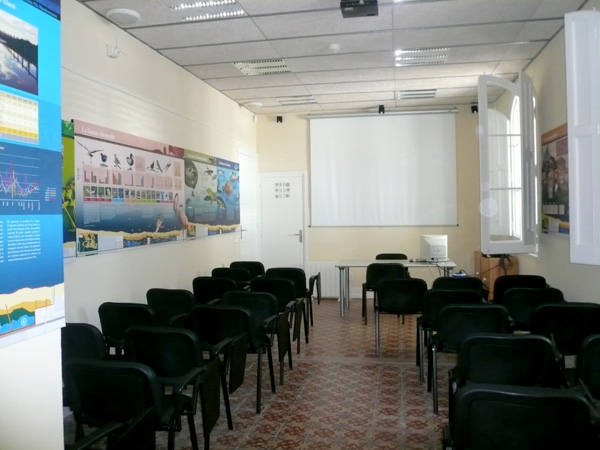
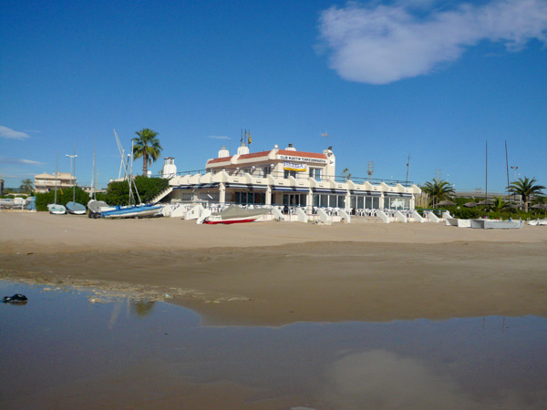
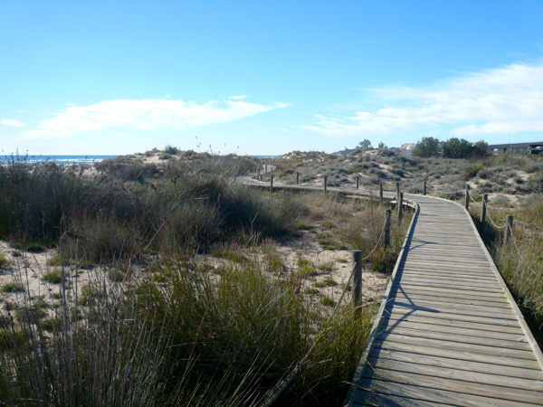
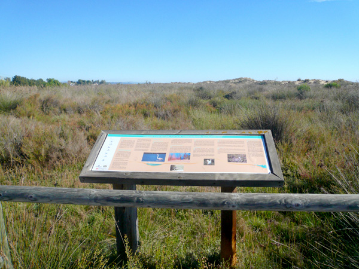
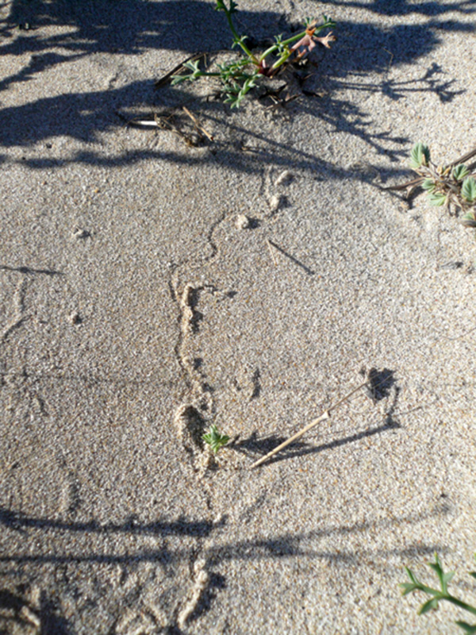
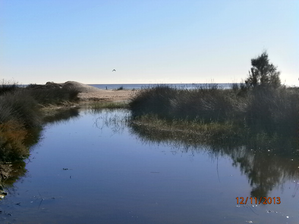

Torredembarra
Atrás-

Playa del Barrio Marítimo
-

Alfa-Omega
-

Baix a Mar
-

Plaza Valls Ivern
-

Tiendas de Clarà – Casitas de Pescadores
-

Sendero Azul Cal Bofill, Baix a Mar i Els Muntanyans
-

Cal Bofill
-

Club Marítimo Torredembarra
-

Posidonia oceanica
-

Lagunas del Sol y de Clarà por las pasarelas de madera
-

Els Muntanyans
-

Las Dunas
-

Lagunas Sol y Clarà por el sendero junto a la vía
-

Lagunas litorales
-

Los juncales y prados de llantén crassifolia
-

Información del Espacio Natural Muntanyans
-

Una playa natural llena
-
Servicios en la playa
-

Playa de "Els Muntanyans"
-

Pinos de "Cal Valent"
-

Laguna del Saler
-

Observar las aves
-

Tamarigar de cerca de Creixell